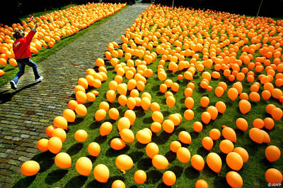
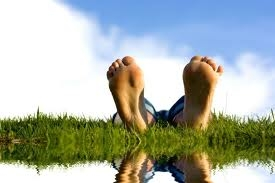

#Gratis Proeven Week 16-20 mei & Film
 Bij Theater De KiK in Elst kun je de week van 16-20 mei gratis proeflessen volgen bij Babs Balletschool en Muziekschool All Music! Je mag kiezen uit viool, drums, piano, cello, blokfluit, (bas)gitaar, trompet, dwarsfluit, trombone, zang of ballet, jazz, flamenco, moderne dans of werelddans.
Bij Theater De KiK in Elst kun je de week van 16-20 mei gratis proeflessen volgen bij Babs Balletschool en Muziekschool All Music! Je mag kiezen uit viool, drums, piano, cello, blokfluit, (bas)gitaar, trompet, dwarsfluit, trombone, zang of ballet, jazz, flamenco, moderne dans of werelddans.
Tot de zomervakantie krijg je daarnaast ook nog 25% korting op de lessen!
Als je de proefles hebt gedaan kun je bij de infobalie in Theater De KiK een grátis filmticket reserveren voor één van de films op 20 mei:
16:00 uur – Sing 2 20:00 uur – In The Heights
Maak snel een afspraak voor de proefles via mail en ontvang daarna het gratis filmticket!
Babs Balletschool: babs@babsballetschool.nl Muziekschool All Music: info@muziekschoolallmusic.nl
!cursisten van Babs Balletschool en Muziekschool All Music kunnen ook een gratis filmticket reserveren bij de infobalie.
Nieuwsbrief
 Nieuwsbrief 2 is op 29-3-22 per mail naar iedereen verstuurd. Heeft u deze niet of niet goed ontvangen?
vraag hem aan via babs@babsballetschool.nl De nieuwsbrief hangt ook op het prikbord in de kleedkamer.
Nieuwsbrief 2 is op 29-3-22 per mail naar iedereen verstuurd. Heeft u deze niet of niet goed ontvangen?
vraag hem aan via babs@babsballetschool.nl De nieuwsbrief hangt ook op het prikbord in de kleedkamer.
Peuter danscursus
 Maandagen 10:00 uur
De kleinste dansertjes vanaf 2 jaar sluiten het 2e blok Peuterdans af op 25 april. Vanaf 16 mei starten we een laatste blokje Peuterdans voor de zomervakantie (6 x)
Ook interesse om met uw kleintje te dansen? doe een gratis proefles, aanmelden via: babs@babsballetschool.nl
De oudste peuters stromen door naar het kleuterballet.
Maandagen 10:00 uur
De kleinste dansertjes vanaf 2 jaar sluiten het 2e blok Peuterdans af op 25 april. Vanaf 16 mei starten we een laatste blokje Peuterdans voor de zomervakantie (6 x)
Ook interesse om met uw kleintje te dansen? doe een gratis proefles, aanmelden via: babs@babsballetschool.nl
De oudste peuters stromen door naar het kleuterballet.
Project Pilates
vanaf 14 april Donderdagen 18:30 Project (6x) Pilates is opgestart en met groot succes! een fijne manier om kennis te maken met een training die perfect aansluit op je dansles en je inzicht geeft in je eigen lijf. Versterk je core, stabiliteit en flexibiliteit door oefeningen op een mat onder begeleiding van Britt.
Koningsdag
Koningsdag 25 t/m 29 april zijn er gewoon lessen, alleen Koningsdag is een vrije dag. Veel plezier allemaal!
Mei vakantie 
deze mei vakantie loopt iets anders dan de schoolvakantie! van 2 t/m 13 mei is het mei vakantie. de inhaallessen van Britt/Daphne en Sarah gaan in de week van 9 t/m 15 mei wél door.
Ballet Spelletje Balletris
 Typ deze code in op je toetsenbord: ⬆⬆⬇⬇⬅➡⬅➡ ba
Typ deze code in op je toetsenbord: ⬆⬆⬇⬇⬅➡⬅➡ ba